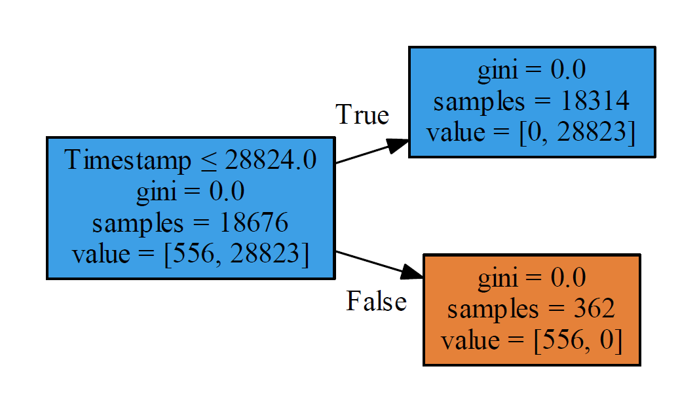
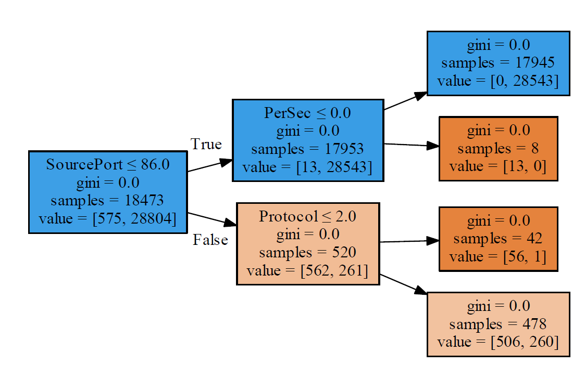
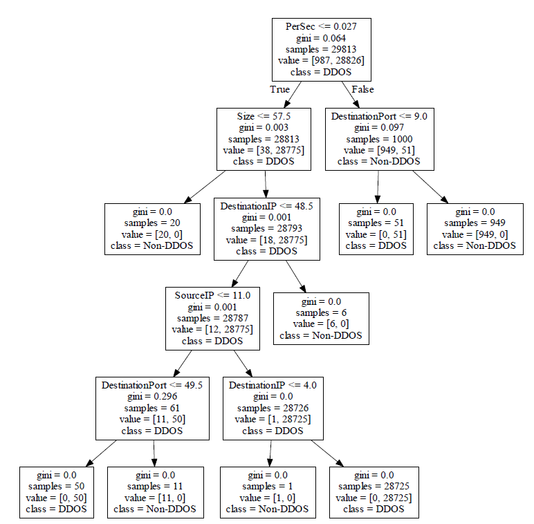
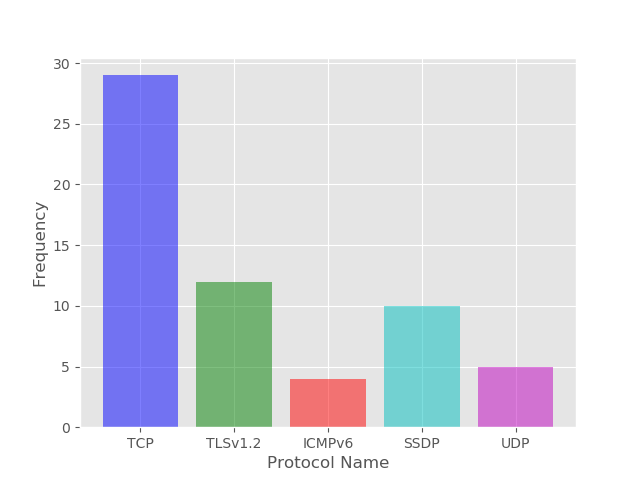
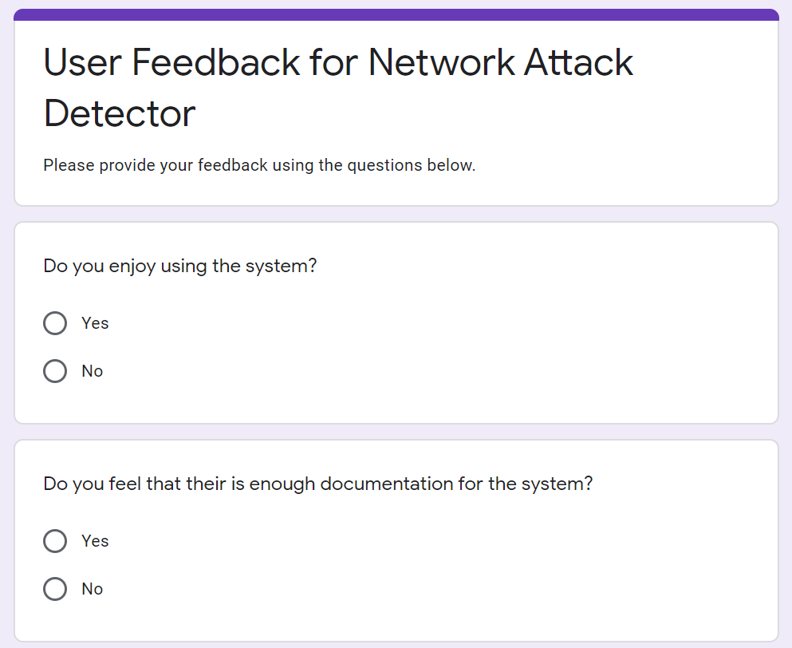
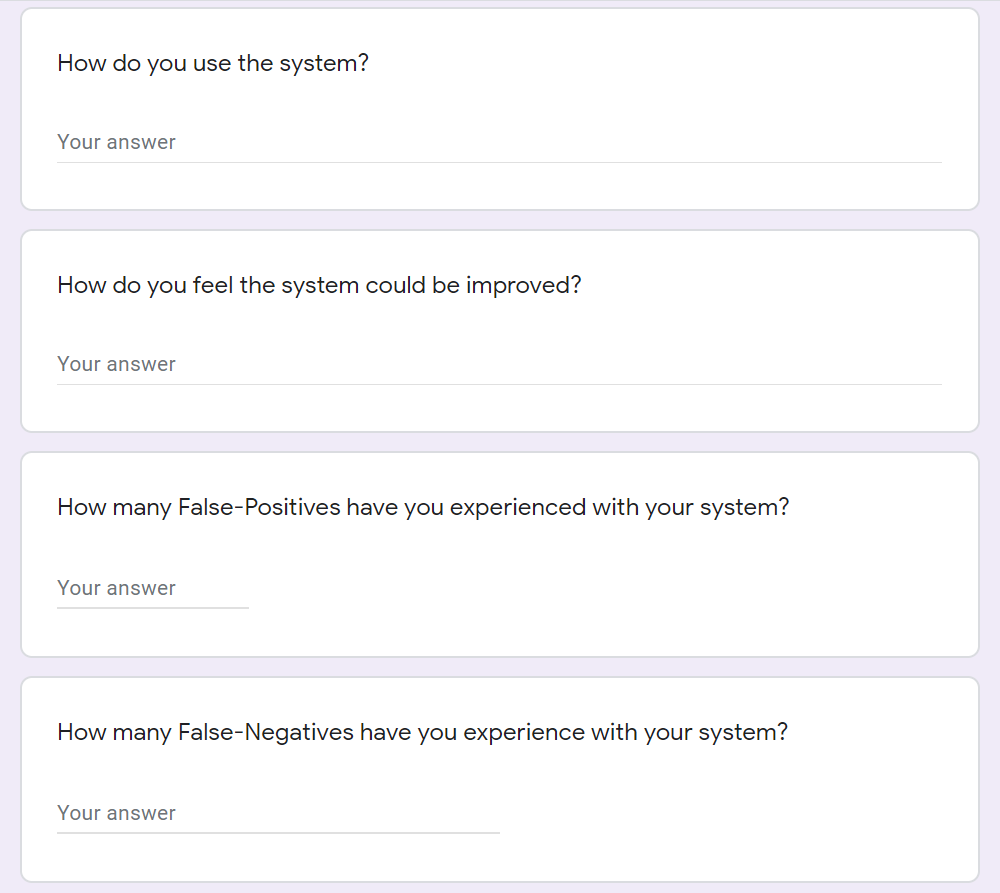

Introduction
At Queens University Belfast there is a module called “Computer Science Challenges” which I am enrolled on. This module sets Year 1 students a momentous computing task for their experience level and then sees how far we get along. The main goal is not to complete the task but to create things of value which will be useful to people.
My task was:
“Create a raspberry pi, npcap and wireshark basedpacket sniffing network monitor that can be attached towired and wireless networks and passively monitor network communications. Time permitting explore how anomalous transmissions can be detected using machine learning based modelling of normal network behaviour. This project also requires an analysis of the data protection and privacy implications of the technology.”
In this post, I will detail how I went about my project and the steps involved, so that if you wish to continue it, you can.
QEMU & Linux
This task intimidated me. I mean what would your response be to a paragraph in which you don't know what half the words mean! Anyway, the first step I took to tackle this problem was to dual boot Linux onto my laptop. Why?, Well I knew from my (very limited) experience of using a raspberry pi is that they are very slow. An emulator would be much easier to work with. Enter QEMU. QEMU is a generic and open source machine emulator and virtualizer, perfect for emulating a raspberry pi. Now granted QEMU can be run on a Windows operating system however there is performance loss running on Windows. I manage to install the Raspbian onto the QEMU, learning a variety of useful Linux commands. I had not used Linux before so I found this very rewarding to get working. Now on my machine the emulator still ran very slowly. This is because raspberry pis run on an ARM processor whilst my machine ran on an Intel x86. This difference in instruction sets meant that the instructions themselves needed to be translated from Intel x86 to ARM. You could imagine that the amount of instructions needed at one time would be quite high, so most processing resources were spent on this conversion. The work setting up this emulator was all for nothing upon the discovery of what NPCap was…
NPCap
Npcap is the Nmap Project's packet sniffing (and sending) library for Windows. It is based on the discontinued WinPcap library, but with improved speed, portability, security, and efficiency. NPCap is dependent on the Windows operating system, thus I couldn't run it on my raspberry pi, let alone my Linux emulated raspberry pi. I did some digging ( https://github.com/nmap/nmap/issues/1590 , https://www.raspberrypi.org/forums/viewtopic.php?t=143622) ) which reaffirmed that I could not use that package. This vexed me massively, as learning how to use NPCap took a long time, as someone who has not done c programming before. I even created a how-to guide for it, in order to help new users (INSERT LINK TO HOW-TO GUIDE HERE).
TShark
What was I to do? With no packet sniffing package, how was I to progress? After much deliberation I decided to use tshark instead. Tshark is the terminal version of Wireshark, so it adhered to the project spec. It also works on most operating systems, including Raspbian.
I found using tshark to be a very enjoyable experience. After getting use to the syntax, I found myself reading and writing packet files from both wired and wireless networks. Since the GUI version, Wireshark, is much more popular than the terminal based version, there was limited learning resources. I created a video tutorial giving an overview of how tshark works ). You may ask why I would use tshark over Wireshark for this project. The answer is that Wireshark, being GUI based requires a lot more computing resources than tshark.
Setting Up Raspberry Pi
At this stage I assembled my raspberry pi. As this device was for wired and wireless networks, I was provided with a usb wireless adapter which allowed the raspberry pi to connect to the internet.
Here is a list of what peripherals I used:
- Raspberry Pi 3 (Running Raspbian 4.19 Buster)
- Monitor
- Mouse
- Keyboard
- Wi-Fi Adapter
Computing resources are scare on a raspberry pi, so any saving you can accrue is for the best.

Now with the packet files being produced, I now needed a way to send them to my laptop in an efficient manner.
File Sending
I tried to use WinSCP to send files to and from my raspberry pi. WinSCP is a free SFTP,SCP,S3 and FTP client application. After watching a tutorial on the subject, I managed to link my laptop and the raspberry pi with an SSH connection using the wireless network. I was now able to manually send files to and from my laptop and the raspberry pi. This was good start, however I needed to automatically send the files between the two machines. This would involve setting up an SFTP server. I looked feverously for a good tutorial on the subject matter, but unfortunately, I could not find one. That process took about 2 days, due to the constant trying and restarting of different methods. Eventually I gave up on this particular approach and decided to do use something else…
Flask is a micro web framework written in Python. It is used to build simple websites and act as a webserver. How could this package be of use in this situation? I set up a webserver using Flask, which allowed me to then setup a URL which would, when visited, would automatically download a selected file. I ran this flask server on my raspberry pi and set the desired file to be a packet file. It worked perfectly… after a few iterations of the initialisation command. I was over the moon that I had found a solution to this problem as now I would be able to have a constant stream of packet files being sent to my laptop for processing.

In order to receive the file, I had to use another library, Pycurl, which is a Libcurl wrapper for python. The way it works is that Pycrul receives the file as a byte string. Pycrul then writes this byte string as a file with the specified extension.

Processing (Cleaning) Data
Speaking of processing, this is what I moved onto next. My goal at this
stage was to do a “proof of concept” for my machine learning model as I had
no prior experience with machine learning and wanted something relatively
simple to start. I decided that my machine learning model would determine
if a packet was part of a DDOS or not. PyShark is a python wrapper for
tshark. This is how I “read” my .pcap files into my program. I was very
impressed by PyShark's capabilities. I made a beginner's guide
In order to learn the basics of machine learning, I watched a couple of fast.ai lectures for their “Machine Learning for Coders” course. These lectures were great as they immediately told me how to implement a machine learning algorithm. Note that in the lectures they use a RandomForestRegressor but for my problem I needed a RandomForestClassifier. This is because I wanted to classify my packets into DDOS packets or normal packets.
Cleaning the data for this project proved quite tricky. In the fast.ai lectures it is made explicitly clear that all data must be in numerical form for the random forest to work. This means that data such as IP Addresses need to be treated as categories and assigned their own corresponding code. Also, certain protocols such as ICMP do not have port addresses so accounting for these protocols was also something to look out for.

Fast.ai recommends using pandas, which is a high-level data manipulation package for python, to manipulate data. This package, though extremely useful, did have some syntax and commands which were not very intuitive. Still I managed to clean the data for use in the model.
Datasets
In order to train and test my model I had to source a few datasets for my project. This took a while as there are not many publicily available datasets of useful packet data files. Here is the list of useful datasets I found:
- Netresec is an independent software vendor with focus on the network security field. They also maintain a dataset of pcap files, some of which come from honey pots.
-
The paper “An empirical comparison of botnet detection methods”
hits a lot of the same themes that my project has.
The scholars in this paper created their own public dataset.
- University of New Brunswick has many different pcap datasets
- Expanding the threat detection aspect of the model, so that it can detect more than just DDOS attacks.
- Trying different machine learning algorithms other than Random Forests
- Expand the project to give diagnostic information to help solve the problem/threat detected.
- Expand the project so that the device can disconnect the problem computer from the network.
I went about finding these datasets by browsing the top academic papers in the subject on Google Scholars. I also searched online via Google to see if any companies or universities had released public datasets.
Debugging the Machine Learning.
When I had created my first model, the accuracy score was only 0.25. This meant that the model was worse at predicting DDOS packets than randomly guessing. This was very confusing as, on the outside, the code looked correct. I began debugging by checking that the data had been processed correctly. I found no issue with this. I then checked the accuracy metric itself to see if it was being calculated incorrectly. That was also correct. So that left only one place the error could be, the model itself.
I began by downloading and installing Graphiz, which is the program used to visualise the internals of the machine learning model. I was using 100 RandomTrees in the model, which meant that 100 tree diagrams where produce. Here are two of them:


In the first tree diagram lies the cause for the poor accuracy rating. The RandomForest was using the Timestamp as a feature and had essentially learnt that DDOS attacks occur at certain times and if a packet is not sent at this time then it is not a DDOS packet. Of course, this assumption is incorrect. Finding this issue took a while, and so did finding the solution. I removed the Timestamp feature from the model, as the time the packet was sent has no bearing on whether it is a DDOS packet. I then changed the model from a RandomForestClassifier to a DecisionTreeClassifier. The reason for this change was that this model would be easier to debug (as there is only 1 tree as apposed to 100) and would provide greater clarity on why which packets are being classified into the two groups. Here is the Graphiz diagram for the DecisionTreeClassifier:

It felt very rewarding to have resolved this issue as I gained a greater insight into how these types of machine learning algorithms work. This change increased the accuracy from 0.25 to 0.75, which is quite the improvement.
Current Status & Possible Improvements
This project could be expanded and improved in many different ways:
Testing & Analysis System
Below I have outlined all the possible things I can think of that may go wrong with the project, in a systematic approach.
|
Problem |
Severity |
Probability of it occurring. |
Priority |
Perceived Amount Of Work To Resolve |
|
System can handle large packet files |
Medium |
Medium |
Medium |
Medium |
|
System doesn't detect the latest network attacks |
High |
High |
High |
High |
|
The system can't detect "niche" network attacks which do not have a lot of data about them. |
High |
High |
High |
High |
|
The system isn't dynamic and can't update itself. |
Medium |
High |
Medium |
Medium |
|
Raspberry Pi overheating. |
Medium |
Low |
Low |
Low |
|
False Positives. |
High |
High |
High |
Low |
|
Disconnected from Network |
High |
Medium |
High |
Medium |
|
Dealing with Corrupted Packets |
Medium |
High |
Medium |
Medium |
|
Physical Attack on the System |
High |
Low |
Low |
High |
|
75% Accuracy Rating |
Medium |
High |
High |
High |
Ideally, I would like to be able to numerically measure each point in the testing process i.e. to what extent the problem is solved. In the sections below the first paragraph will detail how I would approach solving the specific problem, the second will be an attempt to numerically measure the extent to which the problem is solved.
System can handle large packet files
I would have to test if the system can handle extremely large packet files (i.e. the datasets) and still produce correct results. Unfortunately, my laptop is simply not up to the task, so I would need a computer with more computational resources or an externally rented server. The system will still work if I cannot run the large datasets past it, thus it is categorised as "Medium" for severity.
To design a numeric test for this, we could create "levels". Each level would have a file associated with it and the size of the file increases by ten times the previous levels file size. This way one can assign a "level" to the system based on the highest level achieved without breaking.
System doesn't detect the latest network attacks
Using the latest DDOS attacks to attack a device and record the packet files from that attack is how I would test if the system can detect the latest network attacks. Kali Linux seems to be a good source for these types of attacks. More specifically I would use Slowloris, as it uses partial HTTP requests, which may prove challenging if the partial HTTP packets are corrupted and thus perhaps not picked up by tshark. Another attack which could be used to test the system would be HOIC (High Orbit Ion Canon), as it uses a mixture HTTP, GET and POST requests. This mix of packet protocols may confuse the system and result in a false negative. I&aposm unsure of how hard it would be to use Kali Linux, but with enough time I&aposm sure I could do it. If the system managed to pass these tests without alteration, I would be very impressed.
After garnering the latest network threats, I could create a test for the system, with a numeric score at the end, which would involve the system being tested against these new threats. Of course, these threats would be on a secure private network, as to not affect other people. The challenge here will be obtaining these latest network threats, as those who possess them may not provide them.
The system can't detect "niche" network attacks which do not have a lot of data about them.
A big concern for me is having a niche/atypical attack get through the system undetected. The trouble with these types of attacks is that there is very little data on them (due to being niche) and so there is scant information to train the system on. To combat this there are two options. Either I could write a web scraper that would scour the internet for every scrap of information on these niche attacks or I could simply let the attack pass through but flag it. Once flagged, the attack can simply be inspected, and then specific rules added to the system in order to prevent the attack from passing in again. The second option does not use the machine learning aspect of the project but might be the best option in these sorts of situation, one in which you have very limited information.
To tackle this problem, I may need to build a separate model which detects anomalies in network traffic. Anomaly detection is essentially a model which learns what normal traffic looks like, and when it detects a deviation from the normal, it alerts. The resulting alert would not lead to a network shutdown, ( as deviations from normal network traffic are more common and less severe then attempted network attacks), but would instead prompt a network manager to investigate. This solves the issue of not having any training data for niche attacks.
The system isn't dynamic and can't update itself.
The nature of network attacks means that they are constantly changing. Attackers create new attacks to get over pre-existing defences. As a result, there is a need for the system to be dynamic. This dynamic nature is provided by the machine learning algorithm. However, this dynamic nature can only be continued if there is a constant stream of new information on the latest attacks. Therefore, I would need to link the system to Metasploit. Metasploit is the world's most used penetration testing framework and is open sourced. This global repository for all network attacks is too valuable to pass up.
Updating the rules for the system essentially means sending a file to the system remotely. This is a simple true or false, does the file arrive or doesn&apost it? I think the issue comes whenever there are multiple systems in place, which all need updating.
Raspberry Pi overheating.
I am by no means an electrician; however, I do know that standard raspberry pis do not have much in terms of computational resources. The raspberry pi is already set up in command line mode, so it has no desktop GUI to maintain. Still I do worry about the pi overheating or breaking due to the number of complex processes it must carry out. It may be necessary to modify the raspberry pi. I have these suggestions; upgrade the CPU, replace the heatsink and change the case to prevent overheating. I think the current version of my raspberry pi is fine, and the software can be easily moved to a raspberry pi 4, so perhaps customising the raspberry pi is excessive.
I&aposm not sure on how to numerically measure overheating. I suppose taking the systems temperature throughout operation is probably the best option.
False Positives
A false positive would not be good for the system&aposs credibility. Due to this project using machine learning, I would imagine a few false positives occurring initially. This is because the datasets the algorithm has trained on may be skewed. The longer the system operates, the "smarter" it gets, thus the likelihood of a false positive decreases. In conclusion there isn't much I can do to prevent these false positives. This might be a naÏve approach.The incorporation of a logging system could be useful, as it would tell us exactly why a false positive occurred.
False positives will most likely have to be monitored by the user. If a false positive does occur, the user could send the log file to me. It may be the case that I would have to add explicit rules to the system in order to avoid these false positives.
Another approach for tackling False Positives is by having the model create confidence values for each of its classifications,(it already does his internally, this value is called the gini value). Currently the system values equally a non-DDOS packet and a normal packet. We could alter the confidence threshold for a DDOS packet so that the system would have to be 85%(or other value) certain that the packet is a DDOS packet and to trigger a response.
Disconnected from Network
If the system is disconnected from the network, a contingency plan would need to be put in place. This plan could either consist of the system triggering the alarm (as a malicious person could have disconnected the system purposefully), or the system could remain in a "suspended state" and will stay in that state until it is reconnected to the network. In either case I don't think that this would be too difficult to implement and adds more security and reliability to the system. The log would need to readily available to its users, so perhaps an external display is required.
This is a simple test, either the system performs the desired response when
it is disconnected, or it does not. This does not need to be in a numeric
form.
Dealing with Corrupted Packets
Corrupted packets are a fact of life when it comes to network communication. Sometimes these packets are just dropped by the devices that receive them, other times they are re transmitted. An enquiry will have to be done on how frequently corrupt packets affect the system. There may be no need to consider this problem, since those packets are simply dropped. If this is not the case however the system already accounts for packets with missing data (the _na collumns) so the system will not crash.
A test composing of packet files containing corrupted packets can be devised. To test the systems response to corrupted packets, the system can read each packet file sequentially. We can then assign a "score" to the system based on its response to these packets.
Physical Attack on the System
An attacker could physically break the raspberry pi, rendering the system useless and thus allowing attacks to go through unnoticed. I'm not worried about this though as once all necessary modifications have been completed and the device is ready to be used by everyone, we can mould a stainless steel case for the system, thus making it nearly impossible for an attacker to break the system.
A stress test could be created using a piston which will exert pressure onto the case of the system. The value of the force required to break the case will be recorded. Using this data, we could then further improve the case. It would be worth orientating the case a different way each time as this would ensure a level of security on all sides of the case.
75% Accuracy Rating
Right now, the machine learning algorithm obtains a 75% accuracy rate. This accuracy value, while good, is not the best it could be. To increase accuracy using just one dataset is leads to overfitting however so I must be very careful about how I go about this.
To solve this, I suggest further refinement of the features, so that only the most impactful features are kept. This would mean that non impactful features could be removed and so that would inherently increase accuracy, as the model would not be led astray. Then further testing would be done on a wider variety of datasets.
The numeric results at the end of testing could be used to grade the system overall. This numerical result would be useful if the system was to be mass produced.
In terms of Analysis, I can already visualize the Decision tree algorithm using Graphvis. It might be useful to create a series of matplot lib graphs akin to the one below:

I'm not sure what metrics these graphs will track/record, but the more data about the packet files being inputted into the system means that the system will be easier to debug in the future.
User Analysis
Another analysis which needs to occur is user analysis. This will allow me to gain insights into how users seem to be using my project. This knowledge would then allow me to steer the project into a direction that the user base would want. Different metrics can be measured in order to achieve this. A simple questionnaire could appear to the user, asking for their feedback. Whilst this may seem intrusive, it could prove useful as it opens a dialogue between creator and user. I have made an example of this questionnaire using Google Forms, again I tried to make it brief, as no one likes filling out tireless forms:


Another metric I could use is identifying what types of attacks are being detected the most. With this knowledge I can sure up the defences for that attack, and perhaps remove old or out of date attack data, as this would reduce the file size of the project. Another metric could be scanning a user's network to determine what types of devices are connected to it. With this information, the system could be tailored to defending specific network devices e.g. routers, hubs etc. However, this may prove to be too intrusive. If the user signed an agreement with me for this data, then this wouldn't be a problem.
This was a really interesting project to work on, and I am grateful for having the opportunity to pursue it. Special thanks to QLab for providing hardware resources.